Toolbar Akses Cepat
Toolbar Akses Cepat 101 | Perintah
Tidak di Ribbon
Jika Anda sering menggunakan perintah Excel, Anda dapat menambahkannya ke Toolbar Akses Cepat. Secara default, Quick Access Toolbar berisi empat perintah: AutoSave, Save, Undo, dan Redo.
unduh file latihan
Toolbar Akses Cepat 101
Untuk menambahkan perintah ke Toolbar Akses Cepat, jalankan langkah-langkah berikut.
-
Klik kanan perintah tersebut, lalu klik Add to Quick Access Toolbar.

-
Anda sekarang dapat menemukan perintah ini di Toolbar Akses Cepat.

-
Untuk menghapus perintah dari Quick Access Toolbar, klik kanan perintah tersebut, lalu klik Remove from Quick Access Toolbar.

Perintah Tidak di Ribbon
Untuk menambahkan perintah ke Toolbar Akses Cepat yang tidak ada di Ribbon, jalankan langkah-langkah berikut.
- Klik panah bawah.
-
Klik Perintah Lainnya.

- Di bawah Pilih perintah dari, pilih Perintah Tidak di Ribbon.
-
Pilih perintah dan klik Tambah.

Catatan: secara default, Excel mengkustomisasi Toolbar Akses Cepat untuk semua dokumen (lihat panah oranye). Pilih buku kerja yang disimpan saat ini untuk hanya menyesuaikan Toolbar Akses Cepat untuk buku kerja ini.
- Klik Oke.
-
Anda sekarang dapat menemukan perintah ini di Quick Access Toolbar.

The Ribbon di Excel dapat disesuaikan. Anda dapat dengan mudah membuat tab Anda sendiri dan menambahkan perintah ke dalamnya.
-
Klik kanan di mana saja pada Ribbon, lalu klik Kustomisasi Ribbon.

-
Klik Tab Baru.

-
Tambahkan perintah yang Anda suka.

-
Ganti nama tab dan grup.

Catatan: Anda juga dapat menambahkan grup baru ke tab yang ada. Untuk menyembunyikan tab, hapus centang pada kotak centang yang sesuai. Klik Reset, Reset semua kustomisasi, untuk menghapus semua kustomisasi Ribbon.
-
Klik Oke.
Hasil.

Aktifkan tab Pengembang di Excel jika Anda ingin membuat makro, mengekspor dan mengimpor file XML atau menyisipkan kontrol.
Untuk mengaktifkan tab Pengembang, jalankan langkah-langkah berikut.
-
Klik kanan di mana saja pada Ribbon, lalu klik Kustomisasi Ribbon.
- Di bawah Kustomisasi Ribbon, di sisi kanan kotak dialog, pilih tab Utama (jika perlu).
-
Centang kotak centang Pengembang.
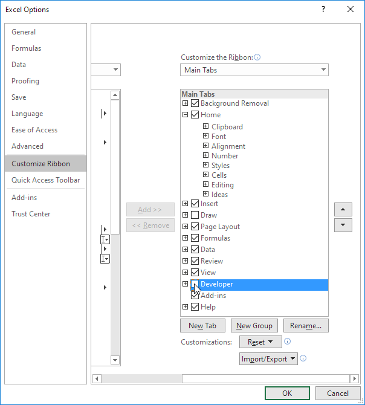
- Klik Oke.
-
Anda dapat menemukan tab Pengembang di sebelah tab Lihat.

Bilah Status 101 | Sesuaikan Bilah Status | Rahasia Bilah Status
The Status bar di Excel bisa sangat berguna. Secara default, bilah status di bagian bawah jendela menampilkan rata-rata, jumlah, dan jumlah sel yang dipilih.
Bilah Status 101
Bilah status di Excel dapat menghitungnya untuk Anda.
-
Pilih rentang A1:A3.

-
Lihat bilah status untuk melihat rata-rata, hitungan, dan jumlah sel-sel ini.

-
Untuk mengubah tampilan buku kerja dengan cepat, gunakan pintasan 3 tampilan pada bilah status.

Catatan: kunjungi halaman kami tentang tampilan buku kerja untuk mempelajari lebih lanjut tentang topik ini.
-
Gunakan penggeser zoom pada bilah status untuk memperbesar atau memperkecil dengan cepat ke persentase yang telah ditentukan sebelumnya.

Catatan: gunakan Ribbon untuk memperbesar persentase tertentu atau untuk memperbesar pilihan.
Sesuaikan Bilah Status
Banyak opsi bilah status dipilih secara default. Klik kanan bilah status untuk mengaktifkan lebih banyak opsi.
- Klik kanan bilah status.
-
Misalnya, klik Caps Lock.
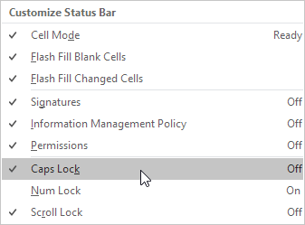
Catatan: ini tidak mengaktifkan Caps Lock (lihat gambar di atas, Caps Lock masih dimatikan). Bilah status menampilkan status Caps Lock sekarang.
- Tekan tombol Caps Lock pada keyboard Anda.
-
Excel menampilkan teks Caps Lock di bilah status.
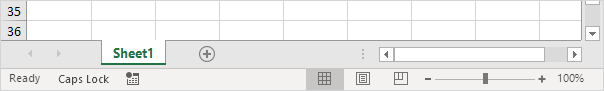
- Klik kanan bilah status.
-
Misalnya, klik Minimum.

-
Pilih rentang A1:A3.
-
Lihat bilah status untuk melihat rata-rata, hitungan, minimum, dan jumlah sel-sel ini.

Rahasia Bilah Status
Inilah sedikit rahasianya: Excel menggunakan bilah status dalam banyak situasi lain. Jika Anda tidak menyukai ini, sembunyikan bilah status.
-
Misalnya, filter tabel.

-
Excel menggunakan bilah status untuk menampilkan jumlah catatan yang terlihat.

-
Arahkan kursor ke sel dengan satu atau beberapa komentar.

-
Excel menggunakan bilah status untuk menampilkan nama penulis.

- Jika Anda memiliki Excel 2016, gunakan pintasan CTRL + SHIFT + F1 untuk menyembunyikan Ribbon dan bilah status.
- Untuk hanya menyembunyikan bilah status, tambahkan baris kode berikut ke Acara Buka Buku Kerja : Application.DisplayStatusBar = Salah
-
Gunakan properti
StatusBar di Excel VBA untuk menampilkan pesan pada status bar.

Catatan: jika Anda baru menggunakan Excel, Anda dapat melewati langkah 6 dan langkah 7.
Sisipkan Kotak Centang | Tautkan Kotak Centang | Buat Daftar Periksa | Bagan Dinamis | Hapus
Kotak Centang | Kotak Centang yang Kuat
Memasukkan kotak centang di Excel itu mudah. Misalnya, gunakan kotak centang untuk membuat daftar periksa atau bagan dinamis. Anda juga dapat menyisipkan simbol tanda centang.
Sisipkan Kotak Centang
Untuk menyisipkan kotak centang, jalankan langkah-langkah berikut.
-
Pada tab Pengembang, di grup Kontrol, klik Sisipkan.

-
Klik Kotak Centang di bagian Kontrol Formulir.
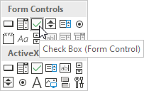
-
Misalnya, gambar kotak centang di sel B2.

-
Untuk menghapus "Kotak Centang 1", klik kanan kotak centang, klik teks dan hapus.

Tautkan Kotak Centang
Untuk menautkan kotak centang ke sel, jalankan langkah-langkah berikut.
-
Klik kanan kotak centang dan klik Kontrol Format.
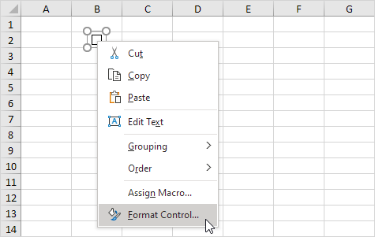
-
Tautkan kotak centang ke sel C2.

-
Uji kotak centang.
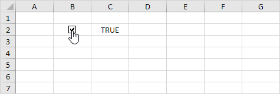
- Sembunyikan kolom C.
-
Misalnya, masukkan fungsi IF sederhana.

-
Hapus centang pada kotak centang.
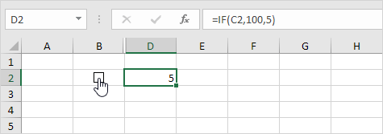
Catatan: baca terus untuk beberapa contoh keren.
Buat Daftar Periksa
Untuk membuat daftar periksa, jalankan langkah-langkah berikut.
- Gambar kotak centang di sel B2.
-
Klik di sudut kanan bawah sel B2 dan seret ke bawah ke sel B11.

-
Klik kanan kotak centang pertama dan klik Kontrol Format.
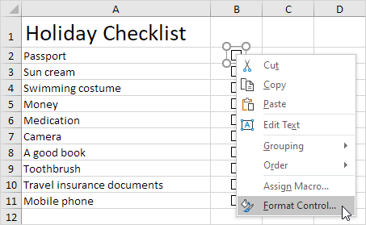
- Tautkan kotak centang ke sel di sebelahnya (sel C2).
- Ulangi langkah 4 untuk kotak centang lainnya.
-
Sisipkan fungsi COUNTIF untuk menghitung jumlah barang yang dikemas.
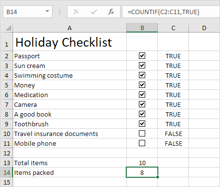
- Sembunyikan kolom C.
-
Sisipkan fungsi IF yang menentukan apakah Anda siap melakukannya.

-
Klik semua kotak centang.

Catatan: kami membuat aturan pemformatan
bersyarat untuk secara otomatis mengubah warna latar belakang sel B16. Cobalah sendiri. Unduh file Excel dan uji daftar periksa (lembar kedua).
Bagan Dinamis
Mari kita lihat satu lagi contoh keren yang menggunakan kotak centang. Sebuah grafik dinamis.
-
Misalnya, buat grafik kombinasi dengan dua seri data (Hari Hujan dan Untung).
-
Tambahkan dua kotak centang.

- Klik kanan kotak centang pertama dan klik Kontrol Format. Tautkan kotak centang ini ke sel B15.
-
Klik kanan kotak centang kedua dan klik Kontrol Format. Tautkan kotak centang ini ke sel C15.

-
Hapus centang pada kotak centang kedua. Sel C15 di bawah berubah menjadi FALSE.
Sekarang kita akan membuat dua seri data baru.
- Masukkan fungsi IF yang ditunjukkan di bawah ini. Gunakan gagang isian untuk menyalin rumus ini ke sel F13.
-
Ulangi langkah ini untuk seri data Laba baru.

Penjelasan: jika kotak centang dicentang, seri data lama dan baru adalah sama. Jika kotak centang tidak dicentang, seri data baru akan berubah menjadi rentang dengan kesalahan #N/A.
-
Gunakan seri data baru untuk membuat bagan kombinasi. Untuk mencapai ini, pilih bagan, klik kanan, lalu klik Pilih
Data.
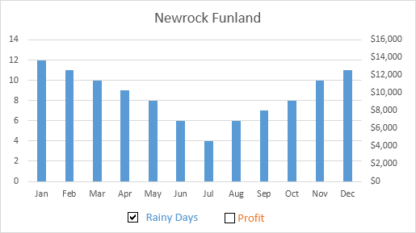
-
Hapus centang pada kotak centang pertama dan centang kotak kedua.

Catatan: coba sendiri. Unduh file Excel dan uji bagan dinamis (lembar ketiga).
Hapus Kotak Centang
Untuk menghapus beberapa kotak centang, jalankan langkah-langkah berikut.
-
Tahan CTRL dan gunakan tombol kiri mouse untuk memilih beberapa kotak centang.

-
Tekan Hapus.
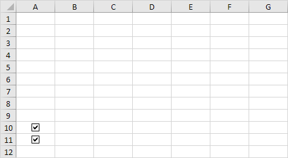
Kotak Centang yang Kuat
Terakhir, Anda dapat menggunakan VBA untuk membuat kotak centang yang kuat di Excel. Alih-alih menyisipkan kontrol Formulir, cukup masukkan kontrol ActiveX.
- Sisipkan kotak centang (kontrol ActiveX).
-
Pada langkah 6, Anda dapat menambahkan baris kode Anda sendiri untuk mengotomatiskan semua jenis tugas. Misalnya, tambahkan baris kode berikut untuk menyembunyikan dan menampilkan kolom F.
If CheckBox1.Value = True Then Columns("F").Hidden = True
If CheckBox1.Value = False Then Columns("F").Hidden = False
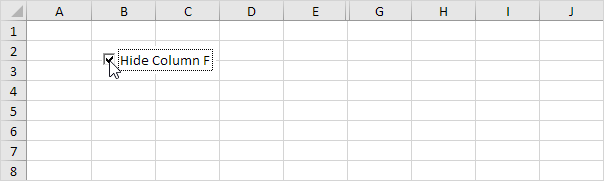
Catatan: mungkin pengkodean adalah satu langkah terlalu jauh untuk Anda pada tahap ini, tetapi ini menunjukkan kepada Anda salah satu dari banyak fitur hebat lainnya yang ditawarkan Excel.